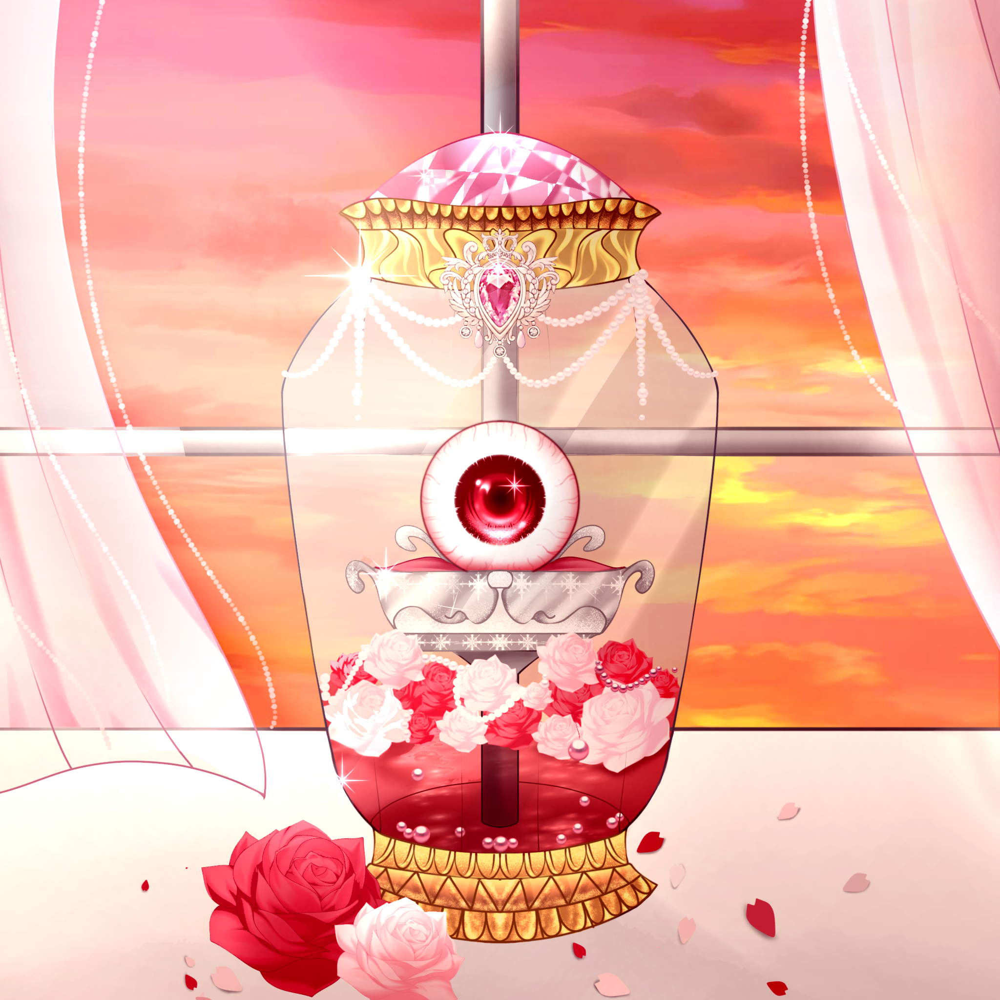

OPHELIA
Captured in the Clown's Smile
Suasana pasar selalu sama. Penuh dengan suara bising akan penjual yang menjajahkan barang dagangannya dengan berteriak memanggil siapapun yang lewat, suara tapak kaki keledai dan kuda yang sedang membawa hasil belanjaan orang-orang, suara bersautan yang saling melemparkan harga, dan suara halus dari minyak di penggorengan yang bertemu dengan lauk pauk. Bau sedap dan tidak sedap seolah bercampur menjadi satu, bau dari sampah-sampah yang tergeletak tanpa ada yang peduli, menyengat dari berbagai sisi, bercampur dengan bau masakan yang baru saja dibuat.
Diantara dunia yang begitu sibuk, seorang gadis menorehkan cat hitam pada selembar canvas putuh yang tak lagi putih. Bisingnya dunia tak lagi menganggu baginya. Seolah semua suara itu hanyalah alunan lagu sumbang yang menghiasai harinya dengan corak hitam. Sama persis seperti apa yang sedang ia lukis. Suara dengung mesin mengganggu konsentrasinya. Gerakan tangannya yang lihai terhenti. Ia menoleh. Langsung mendapati beberapa pemuda melihatnya dari depan gerainya. Tatapan yang mereka layangkan jelas bukanlah tatapan seorang pelanggan yang hendak membeli barang darinya.
"Oh, Ophelia sayang. Kau yang hanya diam-pun terlihat begitu indah." Salah satu dari mereka menatapnya dengan intens.
Rambut merah muda pudar diikat tinggi, berpadu dengan netra merah pekat, kayaknya anggur merah crimson yang hanya dapat ditemui di perayaan besar, indah, namun juga memabukkan. Itulah pandangan orang-orang terhadapnya. Namun bagi sang empu, semua itu hanyalah omong kosong. Dunia tidak akan berpihak pada siapapun yang memiliki rupa indah. Semakin kau indah, semakin banyak pasang mata yang ingin memilikimu. Menghancurkanmu. Dan menjadikannya hanya sebagai sebuah pajangan semata. Itulah yang dirasakan olehnya.
Ophelia hanya diam, tidak menyahuti ucapan pemuda itu. Tangannya kembali bergerak, menorehkan cat pada canvasnya. Ia tidak peduli jika ia dianggap sombong. Baginya, berbicara dengan mereka hanya akan membuang tenaganya yang berharga.
Dunia Ophelia tidaklah luas. Hanya sebatas panti asuhan tempat ia tinggal, dan pasar tempat ia mencari nafkah. Sejak kecil, ia tidak pernah tahu siapa orang tuanya. Ibu panti, seorang wanita paruh baya yang selalu menatapnya dengan tatapan merendahkan, adalah satu-satunya 'keluarga' yang ia miliki. Namun, alih-alih memberikan kasih sayang, wanita itu justru memperlakukan Ophelia seperti budak.